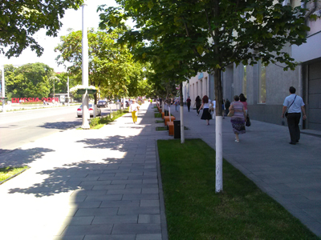
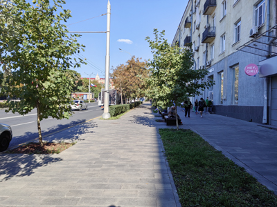

Самый центр города


Улица Большая Садовая, в советские годы носившая название улица Энгельса. Забавно, что, когда город только зарождался, она считалась затрапезной окраиной. Однако теперь это центральная городская улица, вполне ухоженная. Здесь находится несколько административных зданий, фирменные магазины разных «крутых» и не очень брендов, а также дорогие и не очень кафе и рестораны. Здесь же вход в центральный городской парк, названный в честь писателя Максима Горького. Некогда действительно хороший парк сейчас оставляет не столь приятные впечатления. Впрочем, это уже другая история.
На фото небольшой участок Большой Садовой, вблизи перекрестка с проспектом Буденновским. Слева видно часть фасада парка им. Горького. Первое фото было сделано летом 2018 года. Это был год Чемпионата мира по футболу, который проходил в России, и в частности, несколько важных матчей проводилось в Ростове-на-Дону. К этому событию в городе сделали особое оформление некоторых мест, поставили скульптуры, объемные буквы и другие тематические объекты. Заметные в кадре буквы «RUSSIA 2018» как раз появились по этому случаю.


Новое фото сделано в сентябре 2026 года. Тротуарная плитка осталась та же, но она в хорошем состоянии. Либо ее перекладывали на такую же, либо качество плитки действительно хорошее и она столько времени выживает, не смотря на обилие пешеходов. Заменили лавочки, а может просто перекрасили. Стало меньше мусорок. А вот деревья, такое ощущение, что за эти 8 лет почти не выросли. А может их подстригают, чтобы они не разрастались? С другой стороны, стволы как будто тоже не стали толще. Некоторые деревья, видимо, не выжили: на «островке» в правой части кадра в 2018 году видно два дерева, а в 2026 уже одно. Возможно и оно было высажено позднее, а не выжило с 2018 года.
Улица производит приятное впечатление. И тогда в 2018 году, и сейчас в 2026. Здесь приятно гулять, особенно если вы любите городскую суету: машины, много людей, местами пестрые вывески и ассорти из зданий самых разных эпох, от старинных в стиле эклектики и советских построек в стиле сталинского ампира, до ультрасовременных новомодных зданий непойми какого стиля из синего стекла и палок.